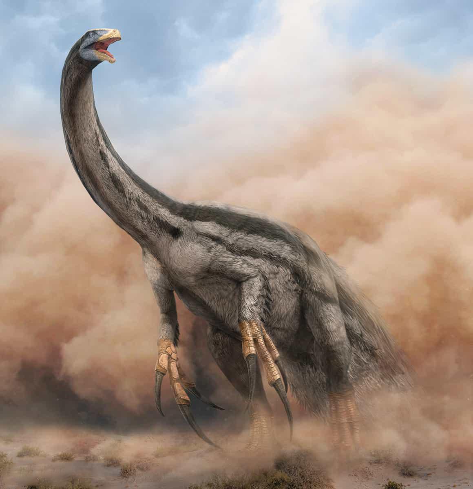
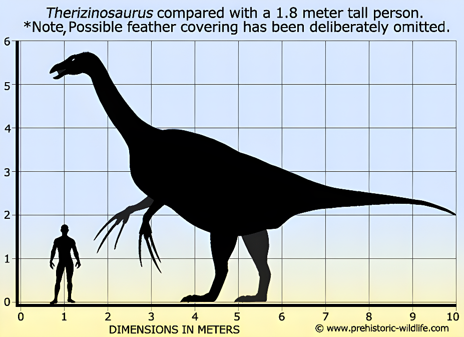

Therizinosaurus
Thằn Lằn Lưỡi Hái kỷ Phấn trắng
Tổng quan
Kỷ
Cretaceous
Họ
Therizinosauridae
Chi
Therizinosaurus
Dài
9 m
Cao
5 m
Nặng
5 tấn
Thức ăn

Therizinosaurus là một chi khủng long chân thú lớn. Therizinosaurus chỉ gồm một loài T. Cheloniformis, sống vào cuối kỷ Phấn Trắng, và là một trong những loài đại diện cuối cùng và lớn nhất của một nhóm độc đáo, Therizinosauria.
Nguồn: wikipedia.org
Phân bố
Khu vực phía Bắc Trung Quốc và Mông Cổ
Thông tin thêm về Therizinosaurus
Kỷ nguyên và phân bố
Therizinosaurus sống cách đây 70 triệu năm trước vào cuối kỷ Phấn trắng. Hóa thạch của loài này lần đầu tiên được phát hiện ở Mông Cổ, sau đó là khu vực miền Bắc Trung Quốc và Bắc Mỹ. Therizinosaurus sống trong các khu rừng gồm nhiều loại cây tán rộng dọc theo các con sông. Khí hậu của hệ tầng Nemegt tương đối ôn hòa (nhiệt độ trung bình hàng năm vào khoảng 7,6 - 8,7 độ C), có mùa đông lạnh, khô và mùa hè nóng, nhiều mưa với lượng mưa trung bình 775 - 835 mm, rất thích hợp cho sự phát triển của chúng.
Tên khoa học
Được xác định và đặt tên bởi nhà cổ sinh vật học Maleev vào năm 1954. Therizinosaurus - "Thằn lằn lưỡi hái" trong tiếng Hy Lạp cho therizo có nghĩa là 'cào' hoặc 'cắt đứt' và sauros có nghĩa là 'thằn lằn'. Nó chỉ được biết đến với một vài cục xương, bao gồm cả những móng tay khổng lồ, nguồn gốc tên gọi của chi. Therizinosaurus chỉ gồm một loài T. Cheloniformis, vì ban đầu hóa thạch của chúng được cho là thuộc về một loài bò sát giống rùa (do đó tên loài được đặt là T. Cheloniformis - "dạng rùa").
Kích thước và ngoại hình
Therizinosaurus là loài lớn nhất trong họ Therizinosauridae khi có thể dài đến 10 mét, cao 5 mét và nặng 5 tấn. Điểm đặc trưng nhất của chúng là ba móng vuốt khổng lồ dài gần một mét trên mỗi chi trước, bộ móng vuốt này cũng giữ kỷ lục là bộ vuốt lớn nhất trong lịch sử thế giới động vật. Về chức năng của nó có các giả thuyết. Đầu tiên, bộ vuốt thể hiện vị thế và khả năng sinh sản của từng cá thể. Thứ hai, chúng được dùng để đánh nhau giành bạn tình và tự vệ trước các loài ăn thịt. Cuối cùng, đây là công cụ để kiếm thức ăn.
Do chưa bao giờ khai quật được một bộ xương Therizinosaurus hoàn chỉnh nên hình dạng của loài này được mô tả dựa trên những đặc điểm chung của họ therizinosauridae. Tức là chúng cũng đi bằng hai chân, có hộp sọ nhỏ với mỏ chim, cổ dài, xương cổ tay giống với loài chim, phần hông nở rộng, xương mu hướng về phía sau và có bốn ngón chân bẹt giống như các khủng long sauropod. Khả năng các thành viên trong họ đều có lông vũ như ở một số hóa thạch tìm được.
Chế độ ăn
Mặc dù Therizinosaurus có vẻ ngoài tiềm ẩn nhiều mối đe dọa, đặc biệt là bộ móng vuốt dài của chúng. Tuy nhiên, Therizinosaurus không phải là loài ăn thịt. Các nhà khoa học cho biết, những chiếc đầu nhỏ và cấu trúc răng hình lá và bị khuyết răng ở nửa trước hàm trên cho thấy đây là đặc điểm của loài ăn thực vật. Có lẽ họ khủng long này đã chuyển sang ăn thực vật từ rất sớm trong quá trình tiến hóa. Biểu hiện rõ nhất là cấu trúc răng và phần hông nở rộng giúp chứa được nhiều thức ăn.
Các trầm tích phù sa trong hóa thạch của Therizinosaurus cho thấy chúng kiếm ăn ở khu vực ven sông. Therizinosaurus ít khi phải cạnh tranh với các loài ăn thực vật khác, ngoại trừ các Titanosaur khổng lồ.
Khám phá
Cuối những năm 1940, các nhà khoa học Xô Viết và Mông Cổ đã khai quật được những móng vuốt dài gần 1 m ở hệ tầng Nemegt thuộc sa mạc Gobi. Ban đầu người ta nghĩ đây là những gì còn lại của một loài rùa khổng lồ đã tuyệt chủng. Đến đầu thập niên 1950, nhiều hóa thạch được phát hiện thêm ở miền Bắc Trung Quốc đã giúp xác định được đây là một loài khủng long mới. Loài này sau đó được đặt tên là Therizinosaurus Cheloniformis (“thằn lằn lưỡi hái dạng rùa”).

Hệ sinh thái
Therizinosaurus là một loài khủng long rất đặc biệt và thú vị trong họ Therizinosauridae, và nó đang được nghiên cứu rộng rãi bởi các nhà khoa học để hiểu thêm về sự tiến hóa và hệ sinh thái của loài khủng long này. Kích thước to lớn khiến các loài Raptor và Troodon không phải là mối đe dọa với Therizinosaurus. Kẻ thù duy nhất của chúng chỉ có thể là Tarbosaurus Bataar, kẻ săn mồi đáng sợ nhất trong khu vực. Tuy nhiên, việc hạ gục được một cá thể Therizinosaurus trưởng thành là một điều không dễ dàng và đôi khi những gã thợ săn Tarbosaurus này còn phải nhận những vết thương khủng khiếp từ bộ vuốt của Therizinosaurus.